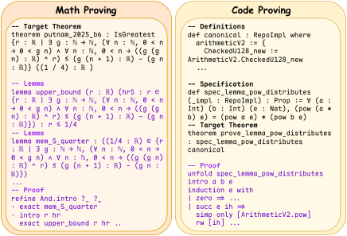
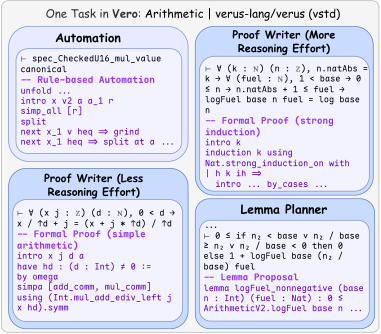

一、引言
1.1 Vero：AI 代理能构建形式化验证的软件仓库吗？

Ye 等人的 Vero: Can AI Agents Build Formally Verified Software Repositories? 于 2026 年 8 月 13 日发布 arXiv 版本（arXiv:2608.13522）。它问的是：AI 代理能否为一个多模块代码仓库同时写出实现和机器可检查的证明？此前的基准大多只考单个函数，或者给定实现后让代理补证明。仓库里的模块会共享类型、调用彼此的 API，局部证明成功并不意味着整个项目都能通过验证。
Vero 收集了 43 个来自真实仓库的多模块 Lean 4 实例，来源包括 Python、Dafny、Verus 和 Coq。每道题都有固定 API、人工整理的形式规约和参考实现。代理可以只给参考实现补证明（proof-only），也可以自己写实现和证明（code-and-proof）。如果发现题目有错，还可以提交证明，指出规约无解或参考实现违反规约。配备 Lean 工具链的最强编码代理完整解决了 27/43 个实例。
1.2 CoCo-Prover：程序验证中通过代理编排降低定理证明成本

Yao 等人的 Cost-Efficient Theorem Proving via Agent Orchestration in Program Verification 被 NeurIPS 2026 Workshop on AI for Verifiable Coding（VERICODEGEN）接收为海报论文，arXiv 版本于 2026 年 10 月 7 日发布（arXiv:2610.09681）。论文除了看证明成功率，还算模型调用的费用。一个程序可能有数百条互相依赖的证明义务；按什么顺序证明、哪些引理值得先做，都会影响最后的账单。
CoCo-Prover 用一张图记录单条证明的拆解过程，另一张图记录定理与引理的依赖，再据此选择下一个目标、调用的代理和预算。它在 五个 Lean 4 基准上的完成率均为最高或并列最高，其中两个达到 100%；与实验中最强的基线相比，模型费用最多降低 30.9%。这些成绩是在什么模型配置下取得的，是后文要细看的问题。
1.3 Prove2Me：扩展数学形式化的开放协作平台

Chen 等人的 Prove2Me: An Open Collaborative Platform for Scaling Math Formalization 于 2026 年 8 月发布，8 月 31 日更新到 v2。它关心的是大规模形式化项目的协作：用户发起一项 mission，多个 AI 代理分别贡献证明，平台负责检查提交、记录依赖，并让后来者找到已经证明的结果。Lean 4 负责检查每份证明；代理之间怎样分工、怎样复用成果，则由平台安排。
论文以黄浩敏感度猜想的形式化过程解释平台机制，并报告数项已完成的论文和教材 mission。第五节重点讨论这些机制如何让不同代理的局部证明接成一条可检查的证明链。
二、Vero 基准与评估
Vero 基准概览（原论文图 1）
Vero 将真实仓库转换为 Lean 项目，保留多模块结构、固定 API 和形式规约。43 个仓库共有 743 个计分 API、2,705 条计分规约。其中形式化语言项目沿用并翻译已有规约；Python 项目则根据代码、文档和测试起草规约，再由人审核。制作过程还检查构建、依赖关系和语义是否一致。原论文图 1

原论文图 1。左侧从真实仓库选取声明、翻译成 Lean 4，再由人工审核定义、规约和模块依赖；这些固定内容构成代理收到的题目。右侧分成两条路径：代理在限定区域内填实现与证明，独立评分器把填入内容放回原题检查；若代理找到规约无解或参考实现出错的形式证据，审计路径把问题送回制作环节修正。最终评分仍使用审定后的固定题目。
proof-only 固定参考实现，由代理补齐证明；code-and-proof 固定接口与规约，由代理同时编写实现和证明。评分器将提交内容放入未修改的题目副本，使用 Lean 检查全部规约和证明依赖的公理。整个仓库通过才算完成。代理还可以提交反面证明，指出参考实现或规约有错；制作人员据此修题。原论文 §3
数据格式（论文 §3.1）
每道 Vero 题都是一个多模块 Lean 4 项目。制作人员固定数据类型、辅助定义、API 签名和规约，代理填写实现与证明。接口规定要实现哪些函数；规约规定这些函数必须满足什么。规约以整套仓库实现 impl : RepoImpl 为参数，因此同一组要求既能检查参考实现，也能检查代理编写的新实现。见原论文 §3.1。

原论文图 2。第 2–4 行定义三个 API 的类型，第 7–10 行把它们装入 RepoImpl；第 13–17 行的 canonical 选定当前要验证的整套实现。第 20–23 行的 spec_create_zero_balance 对任意 RepoImpl 提出要求，最后一行才把它作用到 canonical，形成需要补证明的定理。图中的 sorry 是待填的证明空位，不是最终允许的答案。
论文把每条规约写成
它要求账户原本不存在时，创建账户后查得的余额为零。一个命题连起三个 API，说明规约可以约束多个调用的关系。两种模式都要证明整套实现满足全部规约，不能只挑容易的性质完成。原论文图 2
式中量词要求对任意账户 id 和账本 ledger 成立；箭头左边是前提「该账户尚不存在」，右边是创建后查询的结果。若前提不成立，此条规约不要求返回零。图 2 中的 canonical : RepoImpl 是整套实现的汇总，proof-only 把参考实现填进其中，code-and-proof 则填代理写的实现；两种模式证明的是同一个规约模板作用于不同的 canonical。
任务与评估（论文 §3.2）
Vero 的方法包括题目格式、制作、评分和审计；答题时使用的是配备 Lean 工具链的编码代理，论文没有为它规定一套专门的引理分解算法。代理可以编辑文件、构建项目和尝试证明，但评分器只接收 !benchmark 标记之间的内容，再把这些内容填回一份未修改的题目副本。代理即使在工作目录里降低了规约要求、修改了固定辅助定义，评分时也会恢复原题。
评分不仅看能否编译，还检查证明是否依赖不可信公理，以及代理是否改变了规约含义。尤其要防止证明检查的逻辑函数与实际运行的代码脱离。核心要求是：在固定题目上，提交真实实现与有效证明。具体规则见附录 D。
基准构建流程（论文 §3.3）
论文图 1 左侧的制作流程依次发现并选择源仓库声明、规划 Lean 签名与模块依赖、按模块翻译、审核，再做结构与语义检查；每阶段都要经制作人员确认。已有 Dafny、Verus、Coq 规约的项目以翻译为主，Python 项目还要从原代码、文档和测试起草自然语言规约，经人工审核后再形式化。原论文 §3.3
数据集概览（论文 §3.4；表 1）

原论文表 1。13 个实例来自 Dafny、Verus、Coq，平均每仓库有 36.0 个 API、92.8 条规约；30 个 Python 实例平均有 9.2 个 API、50.0 条规约。mean、max 均按仓库统计；形式化语言路线的源仓库平均规模更大。
本文分析：code2spec 的评分问题
Vero 的 Python 规约根据原代码、文档和测试起草，再由人审核；答题时规约已经固定，代理不能修改要求。见论文 §3.3。
基准形式化审计机制（论文 §3.5）
Vero 固定规约之后，仍须检查这些规约本身是否合理。设
附录 F 有三个刚好对应的例子：
- 参考实现不满足规约：
verified_bitmasks用zipWith合并两列位，结果长度是两者中较短的长度；原规约却在第二列更短时仍要求结果保持第一列的长度。这个反例否定的是当前实现满足原规约，作者通过补上输入等长的前提修题。 - 单条规约无解：
verified_ironkv要求“严格有序的列表没有重复元素”，却允许任意比较器。若比较器对所有输入都返回Less，两个相同元素也会被判为严格有序，因此无论怎样实现 API，都不可能满足这条规约。修复是约束比较器正确识别相等。 - 规约之间冲突：Base64 的填充字符
=，一条规约要求分类函数返回some none，另一条却要求返回none。同一次调用不能同时有两个结果；作者从拒绝字符的范围中排除了=。
第一种证据只否定参考实现，后两种否定题目本身。修题后还要给出正向证明，确认新要求可满足。附录 F
这三个式子里的否定范围不同，审计建议因而不同：第一式只需找出参考实现失败的一处输入，并不能推出换个实现也不行；第二式否定「存在任何实现满足这一条」，通常要检查规约是否缺了前提；第三式允许每条规约分别有解，却断言找不到同一个实现同时满足它们，修复对象是规约之间的冲突。verified_bitmasks、verified_ironkv 和填充字符 = 分别展示了这三种差别。
评估结果与分析（论文 §4.2）
Vero 原论文给每个仓库 90 分钟，评测四种编码代理配置的两种任务模式。图 3 中，GPT-5.5 xhigh 在 code-and-proof / proof-only 下分别完成 27/43、25/43；GPT-5.5 medium 为 2/43、6/43；Opus 4.8 为 8/43、10/43；Sonnet 5 两种模式均为 2/43。
GPT-5.5 xhigh 的逐规约通过率分别为 87.3% 和 85.8%，完整仓库却只完成了 27 和 25 个。还有一个差距不能忽略：同一个 GPT-5.5，proof-only 从 medium 的 6/43 提升到 xhigh 的 25/43。

原论文图 3。左、中两个面板分别是 code-and-proof 与 proof-only：横轴为 90 分钟内的运行时间，纵轴为已完整解决的仓库数，上限 43；曲线在某个仓库最后一条规约通过时才上升，菱形标记各配置的运行时间中位数。右侧图 3c 中，同一仓库对应四种配置的四次结果，显示它被哪些配置完整解决。
GPT-5.5 xhigh 在第 45 分钟已分别完成 25 和 23 个仓库。原论文图 3

原论文图 4。(a) 比较每个「仓库 × 代理配置」在两种模式下是否完整解决；(b) 比较实现行数；(c) 比较证明行数；(d) 比较证明与实现行数之比。(b–d) 的彩色点是完整解，灰点是未完成运行，菱形标出中位数。原论文 §4.2
“证明文本约为两倍”要看左下角图 4(c) 的菱形及旁边的数字：code-and-proof 中，完整解的证明行数中位数为 1,181，未完成运行是 626，约 1.9 倍；proof-only 中分别为 1,320 和 562，约 2.3 倍。横轴是对数刻度，应按标注的行数比较。(b) 中实现行数的两组中位数则更接近：code-and-proof 为 58 对 48 行，proof-only 为 67 对 56 行。论文据此指出，完整解决更明显地体现在持续的证明工作量上。原论文图 4
图 4(a) 另把 172 对同仓库、同配置的两种模式结果并排比较：26 对都完成，13 对仅 code-and-proof 完成，17 对仅 proof-only 完成，116 对都未完成。两种模式各有独占解，说明自行选择实现有时帮助证明，有时增加负担。原论文图 4

原论文图 5，只统计 82 次完整解决。(a) 80 次有至少一条引理被两条规约共用，65 次有引理被至少五条规约共用；(b) 辅助引理占证明行数的中位数为 73.6%（code-and-proof）和 71.6%（proof-only）；(c) 以 GPT-5.5 xhigh 的成功证明为参照，需要四层以上引理链的规约，在其他运行中的通过率明显低于无需引理的规约。图说明完成仓库主要靠可复用的引理库，深层依赖则是难点。原论文 §4.2

原论文图 6。四列是四种代理配置；上排是证明行数，下排是 code-and-proof 的实现行数。细线对应各仓库，粗线是中位数，浅色带为四分位区间。实现通常在前半程趋于稳定，证明则继续增长至时限；GPT-5.5 xhigh 的实现中位数在第 30 分钟已达最终的 65 行，此后证明文本还从 883 行增至 1,077 行。原论文 §4.2

原论文图 7。(a) 按每仓库未通过规约比例分类；(b) 区分未填写证明、构建失败和违规提交等原因；(c) 对 GPT-5.5 xhigh，横轴允许剩余最多
涉及全局覆盖性的规约失败率最高，为 47.1%。同一仓库中，使用给定辅助定义的规约失败率高出 14.9 个百分点，重复调用同一 API 的规约高出 11.7 个百分点。难题往往要求证明多次执行后仍保持某个不变量，也更依赖辅助引理。

原论文图 8。(a) 比较不同语义类型的失败率，其中「存在性与覆盖性」最高；(b) 统计各类型在 262 次未完成运行中出现的比例；(c) 在同一仓库内比较含与不含某种语句特征的规约，使用给定辅助定义和重复调用同一 API 的差值较大，单纯跨模块引用的差值很小。菱形及横线是汇总估计与 95% 置信区间，小点是八种配置各自的结果。原论文 §4.2
图 8(a) 的八行按规约要求证明什么性质分类，不是八种编译或证明错误；后者见图 7(b)。八个类别名称和失败率来自原图。论文正文具体解释了“存在性与覆盖性”，其余类别没有逐项给出正式定义；下表的释义与例子是本文为帮助读图补写的。一个规约可以同时属于多类，所以百分比不能相加；图中的失败率按仓库等权汇总。原论文图 8
论文对“存在性与覆盖性”的解释是：输出必须覆盖或计入所有相关输入。这是全局性质，不能只靠对单次调用做分类讨论来证明；作者将它与前文指出的归纳推理缺口联系起来。以过滤操作作本文示意：只证“返回的元素都合格”还不够，还要证“每个合格的输入元素都被返回”。原论文 §4.2
| 规约类别（原论文） | 本文释义与示意例子 | 失败率（原论文） |
|---|---|---|
| 存在性与覆盖性（Existence & coverage） | 该出现的结果都出现：去重后，每种原有元素仍在输出中；若有符合条件的元素，搜索能找到一个。重点是排除遗漏。 | 47.1% |
| 结构与成员关系（Structure & membership） | 数据结构保持形状与元素归属：向有序树插入后仍有序，新元素成为树的成员。 | 41.0% |
| 界限与最优性（Bounds & optimality） | 结果落在上下界内，或比其他候选都好：返回的方案达到规定的最小代价。 | 41.3% |
| 组合操作（Combined operations） | 几个操作接起来满足关系：先插入一个键，再查询它，应得到刚写入的值。 | 40.3% |
| 往返性质（Round-trip） | 正向操作后再反向操作，恢复原值：decode (encode x) = x。 |
32.9% |
| 直接输入–输出（Direct input–output） | 单次调用的输出与输入满足直接公式：拼接后的长度等于两段长度之和。 | 28.8% |
| 边界情况（Edge cases） | 空输入、零、单元素等特殊情况也满足要求：空列表查找返回“未找到”。 | 22.0% |
| 状态更新（State updates） | 一次操作前后的状态满足关系：存款后该账户余额增加，其他账户不变。 | 20.9% |
“组合操作”关注多次调用之间如何衔接，“状态更新”关注一次操作前后状态怎样变化；同一条规约也可能同时属于两者。图 8(b) 问这些类别在未完成运行中出现得有多普遍，图 8(c) 则另看“使用给定辅助定义”“重复调用同一 API”等语句特征。原论文 §4.2
图 3 展示时间与完成数；美元费用见原论文附录 E.4 的表 5。Total 是每种配置运行 43 个仓库的总费用，Full 是完整解决的仓库数，Specs 是通过的规约数；右侧两列分别把总费用除以这两种完成数。

原论文附录 E.4 表 5。GPT-5.5 medium 在 proof-only 的总费用较低，但每个完整解为 $182；xhigh 则为 $119。
论文未单列输入、输出或总 token 数。344 次运行中，121 次有终端遥测；其余 223 次在 90 分钟上限时被终止，作者按已测运行的每分钟费用与实际耗时估算美元费用。附录 E.4
附录 H 的 Merkle 树合约有 79 条跨四个模块的规约。GPT-5.5（xhigh）最终全部证完，并自行写出 99 条辅助定理。这说明仓库级证明的主体常在共享引理和跨模块不变量，而不是 79 段互不相关的短证明。附录 H
三、CoCo-Prover 的方法
CoCo-Prover 每轮决定先证明哪些目标，再决定调用哪类代理、给多少预算。它按实际模型费用记账，分别统计输入、缓存和输出 token。


原论文图 1，分为 (a)、(b) 两个面板。(a) 数学题的陈述与证明主要使用已有库里的概念，难点常在发现引理分解；程序证明还要理解题目自带的实现、规约和中间状态。(b) 同一程序的不同目标需要不同计算：有的 Lean 自动化就能关闭，有的只需较轻的模型推理，归纳等目标需要更强推理；多处重复使用的事实适合先立为共享引理。这是论文按目标选择策略和思考强度的出发点。原论文图 1
两层证明图（论文附录 B.1）
外部依赖图

原论文图 2。左图表示跨声明复用，右图表示单个证明步骤如何展开为子目标。
左图的节点是具名定理或引理：若
附录 D.1 的字符串案例给出一个具体步骤：correctness 同时要求切分后的段数和每段内容正确。执行 apply And.intro 后，Lean 返回两个都必须完成的子目标；这次步骤及整组子目标构成内部超图的一条超边。
内部图由 CoCo-Prover 的控制程序随执行结果更新，不要求 Proof Writer 自己设计或手写一张图。开始时每条待证定理只有一个根目标；自动化或 Proof Writer 提交一步证明（可以是一条 tactic，也可以是一段 tactic 序列），Lean 返回实际产生的子目标，控制程序才将通过检查的步骤及子目标接入图。Recovery Reviewer 决定放弃某条路线时，系统保留其失败记录并重新开放受影响目标。这就是“惰性构建”：只记录已经尝试的路线，不预先生成所有可能分支。代理负责提出和修正证明步骤，Lean 负责检查步骤及返回子目标，控制程序负责维护图。论文没有进一步说明控制程序如何切分 tactic 序列、提取每个中间状态，因而不能推断每条 tactic 都会自动生成图节点。附录 B.1–B.2
系统允许先使用暂定引理推进上层证明，但只有自身证明通过、依赖也全部完成，目标才算最终完成。暂定引理失败时，要重新打开受影响的工作，保留无关成果。
问题形式化（论文 §3.1）
论文把整个证明过程看成一串有成本的决策。第
路由器接下来选择一次行动：
例如，调度器交出
论文用
这里
若
论文还把一次路由失误的代价记为
共享引理的账也能具体写出。若
两边都有
CoCo-Prover 系统设计（论文 §3.2）

原论文图 3。调度器给出依赖已就绪的目标；路由器决定动作；代理把检查结果写回图和共享记忆。
沿箭头读图：两层图先告诉调度器哪些目标依赖已经就绪，路由器随后决定选哪个目标、派哪个专家、花多少推理预算；专家把 Lean 可检查的证明片段或失败信息送给检查器，结果再返回图和共享记忆。这里调度器解决「能不能开工」，路由器解决「现在做哪个更值」；若一次调用失败，图中的失败记录是下一轮调整策略的输入，并非直接丢弃整次运行。
图 3 的一次循环从符号调度开始：调度器根据依赖图给出所有当前可处理的目标；路由器按语义将相近目标分组。若静态检查发现目标只需展开定义，系统先交给无需模型调用的确定性自动化。其余目标交给路由器：它读取 Lean 目标、相关定义、已证和暂定引理、历史报错与费用，再选一个目标组、专家和推理预算。初始原则是：在完成希望相近时，优先估计总成本更低的行动；路由器可依据后续结果修订规则。原论文 §3.2
四类专家承担不同工作。确定性自动化尝试规则化的 Lean 策略；Proof Writer 在给定预算内写证明、读报错并修改，预算用完仍保留已验证的部分进度；Lemma Planner 提出可供多个目标使用的辅助引理，先检查陈述能否在 Lean 中通过类型检查、依赖图是否仍无环，再用测试和结构检查尽量排除假引理；Recovery Reviewer 分辨目标是否可能为假、当前路线是否过于昂贵，必要时退回最近仍有效的证明状态。候选引理通过这些初筛并不等于已获证明。原论文 §3.2
每次行动结束，控制程序将 Lean 验证的步骤、新子目标、诊断和真实费用写回图与共享记忆，再重新调度。路由器的初步分析会随调用传给专家，减少重复理解同一批目标的成本；若暂定引理最终失败，系统只重开依赖它的证明，保留无关的已验证成果。附录 B.2、B.5–B.6
提出引理还不等于完成分解：为目标
这里与后文 Prove2Me 的提交规则不同：CoCo-Prover 允许先把
四、CoCo-Prover 的评估
4.1 实验设置（论文附录 C.1）
实验用了五个 Lean 4 基准：CLEVER 161 题、VERINA 189 题、AlgoVeri 77 题属于函数级任务；NTP4VC 取按名称排序的前 300 条验证条件，Vero 则有 43 个仓库，使用 proof-only 模式。全部实验固定实现和定理陈述，只生成证明。CLEVER 和 AlgoVeri 原本没有参考实现，作者先用 GPT-5.6-Sol（high）生成代码，经人工核对后交给各证明系统。
实验模型是 GPT-5.6-Terra、Gemini-3.5-Flash、DeepSeek-V4-Flash。基线包括反复生成和修复证明的 Ax-Prover-Base、单定理代理 Humanize，以及各模型的官方编码代理 Codex、Gemini CLI、DeepSeek Harness。前两者按单条定理工作，所以仓库级任务只与编码代理比较。函数级每题上限为 5 小时、$30，仓库级为 8 小时、$60。美元账单只计模型调用，不包含 Lean 检查、检索和嵌入等本地计算。
相同模型的各方法都调用同一官方提供商，按输入、缓存和输出 token 计算费用；Lean 检查与检索等本地计算不计入美元账单。附录 C.1
成功结果还要经过五道检查。先用 Lean 重查生成文件，出现 sorry、admit 或未完成目标就算失败；再逐字比对原定理陈述并重新 elaboration，检查目标有没有被改动；随后追踪证明依赖的公理，拒绝新增公理。机械检查通过后，由 GPT-5.6-Sol 驱动的 Codex 复审可疑证明，再按基准、方法和模型抽样进行人工检查。全部通过才计为成功。
主表比较 CoCo-Prover、通用编码代理、Humanize 和 Ax-Prover-Base；同时生成实现与证明的方法不符合这里固定实现的评测设置。
4.2 性能：成功率（论文 §4.1）
表 1 列出了五个基准与三个模型的全部组合，上半部分为两个仓库级基准，下半部分为三个函数级基准。

仓库级的「成功」要求全部证明义务完成，函数级则是单题完成；表 1 分别列出这两类结果。
在相同模型下比较，CoCo-Prover 的 15 组结果均为最高或并列最高。CLEVER、VERINA 的函数级任务已经接近满分，剩余提升空间不大；Vero 仓库级任务的提升则大得多。
DeepSeek 的差距尤其大。对照代理倾向于一次处理整题，CoCo-Prover 则拆成多轮、分别控制推理强度和预算；这列结果同时包含框架与模型的适配差异。附录 C.3
4.3 性能：费用（论文 §4.1）
表 2 对每个基线单独取成功交集，只比较双方都完成的题目。表中列出三类基线、各自的交集题数和模型费用。

表 2 对每个基线使用不同的成功题目交集，费用统计只覆盖这些共同成功的题目。
九个函数级组合中，CoCo-Prover 在共同成功题目上的费用均低于 Humanize、Ax-Prover-Base 和编码代理。AlgoVeri + Terra 相比 Humanize 只便宜 1.3%；Vero + Terra 唯一共同成功的仓库，则是 Codex 更便宜。Vero 的交集较小，仓库级费用主要看 NTP4VC。
图 4 将函数级单题预算从 $0 增加到 $30，统计各预算下完成的题数。三个模型上，CoCo-Prover 在大部分预算区间领先；Terra 在最高预算下完成 419/427。但在 Terra 和 Gemini 上，它的平均运行时间都长于编码代理。多轮路由和 Lean 检查省下了调用费用，也增加了串行等待。


原论文图 4 的三个模型面板。横轴是单题费用上限，纵轴是完成题数；同一预算下曲线越高，表示完成的题目越多。
三个面板都汇总函数级任务共 427 题，不包含 Vero 的 43 个仓库。原论文 §4.1
4.4 消融研究（论文 §4.2；附录 C.4–C.5）
消融实验固定 Gemini-3.5-Flash，从三个函数级基准各取 10 题。表 3 列出各基准及全部 30 题的成功数和费用，完整系统的费用取三次运行均值。

表中完整系统是参照行，其余行分别撤掉路由器、确定性自动化或引理规划器；每行同时列出成功题数和模型费用。样本为每个函数级基准 10 题，合计 30 题。
去掉路由器或引理规划器后，费用与成功率都有明显损失。确定性自动化的平均作用较小：CLEVER、VERINA 从中受益，AlgoVeri 去掉它后反而便宜 5.8%。
消融保留了两层图：去掉路由器时，只把自适应动作选择换成固定调用顺序。作者在附录 C.5 解释，调度靠图确定目标顺序，引理共享靠图定位使用者，回滚靠图重新打开目标；删除整套图会同时改动这些机制。因此，论文用基线和案例展示图的作用，未单独替换内部超图。附录 C.5
路由器每轮既读取一份写明选择原则的规则，也读取以往尝试和 Lean 报错。作者没有做“只删规则、保留路由器”的实验：即便删掉规则，模型仍可能从失败记录判断下一步该换专家或提高思考强度，所以这个实验只能检验规则写成文字有没有额外帮助。论文实际做的是“去掉路由器”，改按固定顺序调用专家；它检验的是整个自适应选择过程的作用，而非那份规则文字本身。附录 C.5
Vero 提供了一个参照：在同一 Codex 与 GPT-5.5 下，proof-only 从 medium 到 xhigh 的完整仓库数由 6/43 增至 25/43；尽管总费用上升，估算的每个完整解费用从 $182 降至 $119。Vero §4.2、附录 E.4
论文在 Gemini 上重复运行全部 427 道函数级题，三次完成的题目相同，费用变异系数为 9.2%。路由器和引理规划器带来的费用变化明显大于这个波动。
CLEVER prob_15：函数级费用比较（论文附录 D.1）
前文的 apply And.intro 将字符串目标拆成两支；两支随后都使用独立引理 implementation_splitOn，把上层规约接到底层字符串操作。CoCo-Prover 为这条证明建立了九条可复用引理。内部超图保存拆出的两支，外部依赖图保存 correctness 对引理的使用；引理和两支子目标全部通过 Lean 检查，原目标才算完成。附录 D.1

原论文的字符串案例依赖图。箭头从辅助引理指向使用它的上层声明；底层字符串性质被证一次后，沿依赖链支撑 correctness，无需每轮重新发现。
这张图展示 correctness 如何依赖字符串引理；apply And.intro 产生的两个 Lean 子目标属于内部图，不在这里。
同一 GPT-5.6-Terra 模型下，CoCo-Prover 用 $2.36 完成该题，Codex 用 $8.67；前者运行时间略长。另一个仓库案例中，56 条区间规约共享排序与合并的性质，CoCo-Prover 完成 56/56，同底座编码代理完成 5/56。附录 D.2
4.5 本文分析：模型与思考强度的跨论文比较
Vero proof-only 上，CoCo-Prover + GPT-5.6-Terra 完成 23/43，原论文的 Codex + GPT-5.5（xhigh）完成 25/43。前者每题上限为 8 小时、$60，后者限时 90 分钟；模型与预算不同。
Vero 中，同一个 GPT-5.5 从 medium 的 6/43 提升到 xhigh 的 25/43。CoCo-Prover 的 router 动态选择思考强度，字符串案例采用高强度规划、低强度写证明；但 Codex 基线的思考强度未明确报告。见方法 §3.2、实验设置 C.1和案例 D.1。
五、Prove2Me 的基本设计与多代理协作
5.1 提交定理（论文 §3.1；图 1）
Prove2Me 把定理陈述和证明分成两个对象。代理先提交一张定理卡片，平台检查 Lean 陈述能否编译，并保存它所需的导入、自然语言解释和来源；证明可以由其他代理稍后提交。

原论文图 1。上半部 Preamble 列出所需模块，下半部 Formal statement 是 Lean 定理陈述。结尾 := by sorry 只标出待证位置：此时平台接受的是能编译的陈述，尚未接受证明。原论文 §3.1
卡片还保存自然语言解释、来源和标签，并固定 Lean 与 Mathlib 版本。这让后来者知道 Lean 陈述原本打算表达什么。
5.2 提交证明（论文 §3.2；图 2）

原论文图 2。证明文件声明 theorem solution，其类型必须与图 1 的目标完全一致。图片只展示了证明开头；提交的完整证明不得含 sorry 或新公理。原论文 §3.2
用类型记号说，定理卡片固定
5.3 Audited missions（论文 §3.3；图 3）
一个 mission 包含主目标、所依赖的定义和关键的里程碑引理。captain 可以让代理起草这些陈述，但发布前，人必须逐条核对这组核心陈述与原数学内容是否一致；普通中间引理可由代理继续提出，由 Lean 检查它们在证明中的作用。草稿在确认前可修改，发布后成为不可变的定理对象。原论文 §3.3

原论文图 3。独立的 read-back 代理只看 Lean 陈述和所依赖的定义，不看原始题意，再把代码译回自然语言。人把“代码实际说了什么”与原命题对照，检查是否漏了条件或改变了量词范围；Lean 只能检查证明是否满足写下的陈述。原论文 §3.3
5.4 Proof decomposition via proof-sketches（论文 §4.1–4.2；图 4–5）
直接让多个代理在同一 Lean 仓库填 sorry，会遇到文件冲突和下游反复编译。Prove2Me 改为让上层证明导入平台上的独立定理，其中有些尚未证明。论文用一个项目展示做法：代理先把主目标拆成几条可单独提交的引理，再写出引用这些引理推出主目标的 Lean 证明。平台检查并保存这段连接证明。原论文 §4.2

原论文图 4。上方的 import Theorems... 导入几条独立引理；下方的 solution 写出怎样用它们推出主目标。图中只展示代码节选；提交的 proof-sketch 本身没有 sorry，尚未解决的是所导入的开放定理。原论文 §4.2
这就是分解所需的连接。如果上层目标记作
分解图只记录依赖，不能代替上方左侧的条件证明；反过来，只有 sketch 而没有子定理证明，上层目标也仍未完成。提交后的陈述与 sketch 不可变，所以各代理可以分别处理开放子定理，最后一项依赖关闭时，上层目标自动关闭。原论文 Property 1

原论文图 5。绿色椭圆是可独立提交证明的定理，紫色方块是已检查的 proof-sketch。读一条从若干引理经过方块到上层定理的路径，就是“先证这些前提，再由这份 sketch 推出结论”。同一定理可被多份 sketch 导入，因而图同时记录分解与复用。原论文 §4.2
5.5 Formalpedia、milestones 与多代理协作（论文 §4.3–4.5；图 6）
Formalpedia 收集已证明且可单独导入的定理。卡片的标准化自然语言描述供搜索 API 建索引；代理提出新定理前先搜索，找到现成结论就直接复用。未证明的定理作为待完成子任务，已证明的定理作为后续 sketch 的依据，这两种状态由同一套导入机制连接。原论文 §4.3

原论文图 6。每个里程碑先列需要确认的核心陈述，再链接 captain 确认过的 Lean 定理。顶部“4 of 4 reached”是里程碑进度，“37 of 44 theorems proved”是整张证明图的定理进度。里程碑让不同代理围绕同一形式陈述工作，避免各自造出无法互用的版本。原论文 §4.4
里程碑并非所有待证子定理的清单。captain 只预先确认关键节点；代理仍可在 sketch 中引入普通中间引理。里程碑完成且由 sketch 接到主目标，mission 才能闭合。原论文 §4.4
论文还记录了代理在讨论区共享证明进展，以及在旧定理被否证后另建修正版；对应的具体记录见原论文附录 A 图 7–8。原论文 §4.5
5.6 Case study（论文 §5；表 1）

原论文表 1。四项 Prove2Me mission 是两篇论文与两本教材；表中还列一项集中式多代理项目作背景对照。《Bandit Algorithms》有约 15.1 万行 Lean、6 个代理、13 天。费用列的 $100,000 按 API 调用估算，Prove2Me 各行按参与者的包月订阅计价；表格展示项目案例。原论文 §5
表 1 展示平台承载的项目规模和协作人数；其中的项目进度由定理卡片、proof-sketch 和里程碑共同记录。原论文 §5
5.7 Prove2Me done right（论文 §6；表 2）

原论文表 2。用户先让有终端能力的代理读取 prove2.me/start.md 完成设置，然后可用普通语言要求它发布定理、提交证明或 sketch、浏览 mission、起草待审的 mission 提案，或处理下一个开放的里程碑。表里的简短指令依赖代理已获得平台工具和固定的 Lean 环境；真正的提交仍由服务端检查。原论文 §6
5.8 多代理持续学习的记录（论文附录 A；图 7–8）

原论文附录 A 图 7。讨论区一条消息指出哪些旧 sketch 仍依赖已否证或弃用的子定理、哪些叶子仍难解；另一条分享已证引理及其来源。共享的不只是聊天记录，还有可供下一位代理使用的结论、失效路线及出处。原论文 §4.5、附录 A

原论文附录 A 图 8。橙色节点代表一条已否证的旧定理；代理补上遗漏的条件，新建修正版，再让 proof-sketch 引用新节点。图保留了错误和修复的痕迹，供接手的代理辨认有效版本。原论文 §4.5、附录 A
六、本文分析：模型能力与外部记忆
三篇工作处理的是不同层面的状态。Vero 固定规约和接口，检查最后交付的整个仓库是否满足要求；CoCo-Prover 在证明过程中保存尝试、子目标与共享引理，决定下一步把计算花在哪里；Prove2Me 固定多人共享的定理陈述，保存条件证明和完成进度。它们都使用 Lean 验证证明，但外部系统要记住和协调的东西不同：最终交付、单次证明搜索、大项目协作。
6.1 模型能力与方法粒度
6.2 共享记忆与证明进度
6.3 形式化目标的人类关口
三篇工作都没有把“原始需求 → 可信形式陈述”完全交给代理。Vero 的规约由制作人员整理和审核，代理接手固定题目；CoCo-Prover 的实验固定实现与待证陈述，主要研究如何完成证明；Prove2Me 允许代理起草 mission，但发布前必须由人逐条确认主目标、定义和里程碑。后续证明所需的普通中间引理，则可以由代理自行提出。Vero §3.3、CoCo-Prover 附录 C.1、Prove2Me §3.3